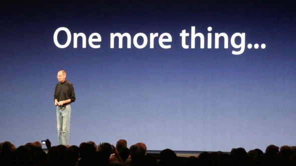

Apple 50 | iPhone
2007. június 29, Macworld expó. Steve Jobs pár perccel előbb jelentette be az Apple TV-t, és, hogy az Apple elhagyja a "Computer" szót a nevéből, most már csak "Apple Inc." a neve. Viszont, mint ahogyan azt az Apple szokta, volt még egy dolog.

Egy kép Steve Jobs-ról a színpadon, mögötte egy kijelző, amin a 'One more thing...' szöveg szerepel. Fotó: Apple Inc. Licensz: Fair use, oktatási célokra felhasznált kép.
Steve elmondta, hogy most be fognak jelenteni:
- Egy telefont
- Egy iPod-ot
- És egy internet kommunikátort.
Steve ezeket a szavakat megismételte párszor, amire már a nézők is értették mire megy ki: Ez mind egy eszköz.
Steve Jobs bemutatja az iPhone-t. Videó: Apple Inc. Licensz: Fair use, oktatási célokra felhasznált videó. (Magyar Feliratok: Varga Bálint)
Az iPhone megváltoztatta a világot, és azt ahogyan ma kommunikálunk, barátkozunk, és szórakozunk. Nem csak az egyik első okostelefon volt, hanem a leginnovatívabb okostelefon az idejéhez képest. Egy teljes, multi-touch kijelzőt raktak rá, és egy fotók készítésére képes kamerát.
Három évvel később, az Apple bemutatta az iPhone nagytestvérét, az iPadet. Az iPad volt az Apple válasza a növekedő tabletpiacra, és mint az iPodnál, itt is ők kerültek ki győztesen. Érdekesség: Az iPad ötlete az iPhone előtt lett felvetve, csak azért jelent meg előbb az iPhone, mert ezt a technológiát le tudták zsugorítani, és az élvezett prioritást az Apple szemeiben.
Következő Fejezet →